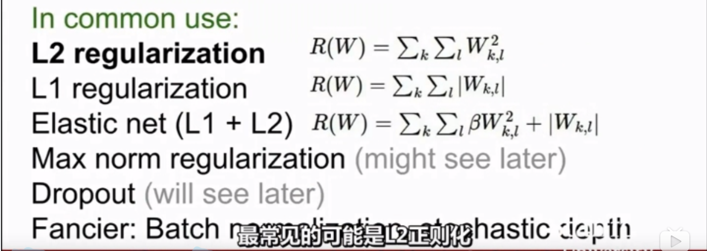
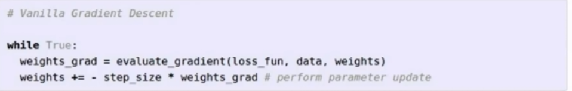
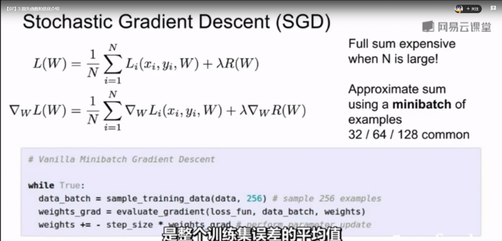

Loss Function and Optimization
Loss Function
接上一节，对于参数化的模型（线性分类器），一个问题是如何衡量一个参数$W$是好是坏呢？而这种度量$W$好坏的函数，即称为Loss function（损失函数），其输出表示这个W是好是坏（亦能表示采纳了这个W的模型是好是坏）。
A loss function tells how good the current classifier is.
而通过这个损失在$W$的可行域中找到能够使损失函数输出最小的$W$的过程，就是优化（Optimization）过程。
- Given a dataset of example ${(x_i, y_i)}^N_{i=1}$, $x_i$表图像，$y_i$表label，在整个数据库上的Loss是在各个样y_i本上的Loss之和（可取平均）：
$$
L=\frac{1}{N}\sum_iL_i(f(x_i,W), y_i)
$$
$i$表示第$i$个样本，$f(x_i, W)$表示模型的预测结果，$y_i$表示输入样本$x_i$的真实label，$L_i$是Loss Function (over a sample)，其结果就能定量描述这个$W$下的模型到底好不好
以 MutiClass SVM Loss 为例
$$
L_i=\sum_{j\ne y_i}\begin{cases}
0 \qquad &if\ \ s_{y_i}>=s_j+1\
s_j-s_{y_i}+1 &\qquad oterwise
\end{cases}
=\sum_{j\ne y_i}max(0, s_j-s_{y_i}+1)
$$
其中，$s_j$表示分类器预测的第$j$类的得分，$s_{y_i}$表示分类器预测的样本正确分类$y_i$的得分，1是margin，其实可以是任意常数。且上式计算的是针对一个样本的Loss；
max函数可以认为是分段函数或者合页函数（hinge function）
注意:
- 上面loss的最大值和最小值是多少？A: 最大值正无穷，最小值为0（画个函数图就出来了）
- 估计参数刚刚初始化的之后的loss值。 A：一般来说，参数初始化之后的权重都很小，这会导致所有的得分都比较接近且约等于0（因为参数很小约为0且无偏置），那么此时loss的值与等于 num_class-1
- mean代替sum对模型有影响吗？A：没有影响，只是放缩了
- 若改成$L_i=\sum_{j\ne y_i}max(0, s_j-s_{y_i}+1)^2$对模型有影响吗？A：有影响，这是另一个loss了，一种非线性的loss（可以尝试画出函数图）
- 令损失函数最小的$w$是唯一的吗？A：不是惟一的，如放缩权重$w$
这类Loss 属于Data Loss，会使模型预测的结果match train data，这就可能会导致过拟合情况的出现（而我们希望的是这个loss能够使网络在Test Set依然不错的表现）
因此提出向Loss中添加正则化(Regularization Term)项，正则化项的目的是：让模型变得”简单“，以保证能够在test set上work
$$
L=\frac{1}{N}\sum_iL_i(f(x_i,W), y_i)+\lambda R(W)
$$
上面Loss的第一项，是让模型match train data，第二项是正则化项，鼓励模型变的简单。正则化体现了奥姆剃刀原理：在众多能够在TrainSet上表现好的模型中，我们应当选择其中最简单的那个。
正则化的几种常见形式：

其中最常见的是L2正则化和weight decay
L1正则化有一个很好的性质：鼓励权重W变的稀疏（->1 or ->0），或者说L1度量负复杂度的方式是1的个数；而L2正则化则趋向于让权重的所有值的复杂度更低（如值差不多接近），或者说L2是从W的整体分布上来判断复杂度的（类似于取整体熵最小的思想）；而如何选取正则化，取决于你的任务，一般都是实验找结果最好的。
除此之外，在贝叶斯理论中，L2正则化有很好的解释，在MAP推理中，L2正则化假设参数向量服从高斯先验
Softmax Classifier (Softmax Loss, Mutinomial Logical Regression)
上面我们提到了MutiClass的SVM Loss中得到的score并无确切的含义，我们只是希望分对的score相对较大，分错的score相对较小。
而最后添加/使用 Softamx Classifier 对进行处理，得到的score会被赋予额外的含义：
Score表示 unnormalization log probabilities of the classes
$P(Y=k|X=x_i)=\frac{s^{s_k}}{\sum_js^{s_j}}, \qquad where \quad s(score)=f(x_i;W)$
- 注意上面的socre是一个向量，每个元素表示对应的分到此类的概率
我们希望分对的概率接近1；考虑到Log为单调的，且找到log的最大值比较容易（课程原话），因此可以针对正确分类来优化log，即$log(P_{right})->1$，而loss function是用来描述“坏”的程度，因此添加一个负号，故对应Loss为:
$L_i=-logP=-logP(Y=k|X=x_i)=-log\frac{s^{s_k}}{\sum_js^{s_j}}$
Q&A
Q: softmax loss 的最大最小值分别为多少？
A: min = 0, max = 正无穷，即最小损失为0，最大损失为正无穷（而正无穷基本不可能达到，要考虑到这是一个概率）
Q: 随机初始化时Loss的值为多少？
A: $log(N)$，N表示类别数
Q: 如何解释Hinge Loss 和 Softmax Loss 得到的score来说模型的好坏？
A: 从Hinge Loss 的定义可知，当某一个样本点的分类正确得分比分错得分高出一个margin的时候，它就不管这个样本点了。而Softmax Loss 则会不断的让其分类正确的概率趋于1，分错的概率趋于1（即Loss 趋于正无穷），会一直”管”这个样本点。（但在实际使用中，感觉没有太大的影响）
模型
实际应用中，给定一以有label的数据机$(x, y)$，模型$f(x;W)$；一般我们再找到合适的loss function去描述模型预测结果与真值的差据，在找到一个针对模型$f$权重$W$的正则化项$R(W)$来构成我们的full loss：$L= \frac {1}{N}\sum_{i=1}^NL_i+R(W)$，以上即为构成了一个完整模型。
优化（寻找最优的$W$）
最笨的方法：随即搜索
好点的：Folow the slope
In 1-dimension, the derivative of a function is :
$\frac{df(x)}{dx}=lim_{h\to 0} \frac {f(x+h)-f(x)}{h}$
In m-dimension (m>1), the gradient is the vector partial derivatives along each dimension.
在多维情况下，$f(\bf{x})$对$\bf{x}$的梯度为对其每一个元素求偏导组成的向量（shape(grad)=shape($\bf{x}$)）
梯度的每一个维度告诉我们函数$f$在这个维度（方向）的斜率，梯度指向函数增长最快的反向，故负梯度方向为下降最快的方向。
某一个维度任意方向的斜率=梯度点乘该点对应方向的单位方向向量
梯度给出了函数在当前点的一阶线性逼近
计算梯度的方法之一：有限差分法 (method of finite differences)
就是从梯度的定义出发来计算的，给定h一个很小的值如0.000001这样，但是在参数量很大的时候或者维度很高的时候，会变得很慢。
梯度下降法的伪代码为：

其中，setp_size 也称为learning rate，是最最最最重要的参数。
随机梯度下降（Stochastic Gradient Desent，SGD）

当数据量很大的时候，由于Loss计算的是所有样本的平均Loss，这样直接全部计算下来，就会非常非常慢，需要搞完所有样本，我们才能计算一个梯度。为了解决这种问题，采用SGD，每次从所有样本中随机选择一个小时minibatch其中可以包含如32，64，128个的样本，然后每计算完一个minibatch，计算一次梯度。
由于minibatch是随机选择的，我们可以把它当作对真实数值期望的蒙特卡洛估计。